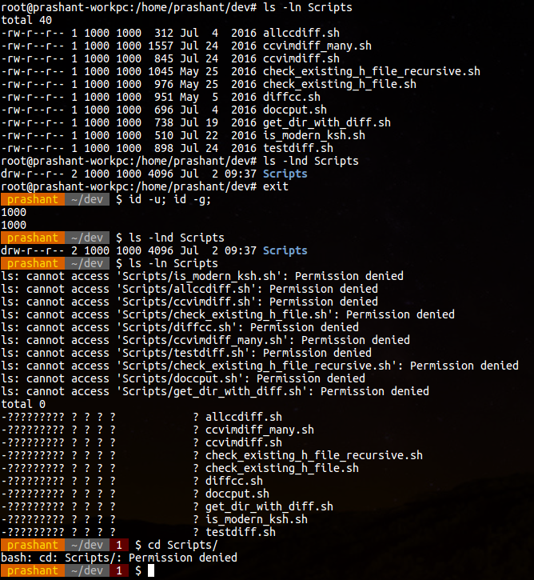

Qual profissão deseja sequir?


Eu sou Ezequiel Abreu Carneiro de Mendonça tenho 19 anos, Atualmente trabalho na empresa One Beleza, empresa que vende software para salões de beleza, barbearias, clínicas de estética Tambem estou cursando Ciencia da Computação na Pitagoras no turno da noite, além de fazer o Tecnico de informatica para internet (eu achava o nome desenvolvimento de sistemas bem mais legal) Então podem concluir que não tenho uma vida, embora isso não seja culpa desses afazeres
Por que eu gosto de computadores e tenho muita preguiça de fazer as coisas eu mesmo, então eu posso fazer coisas pra facilitar minha vida, fora que eu sou horrivel para coisas realmente praticas.